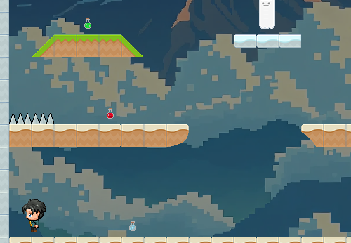
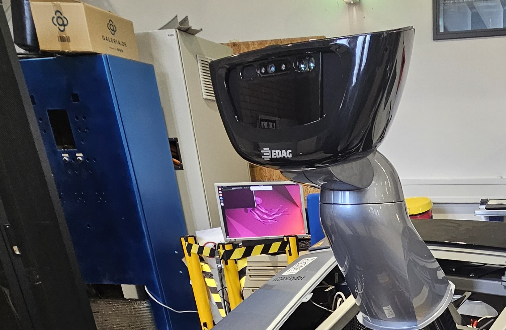
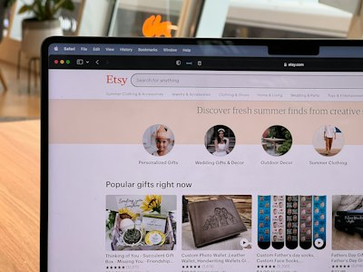
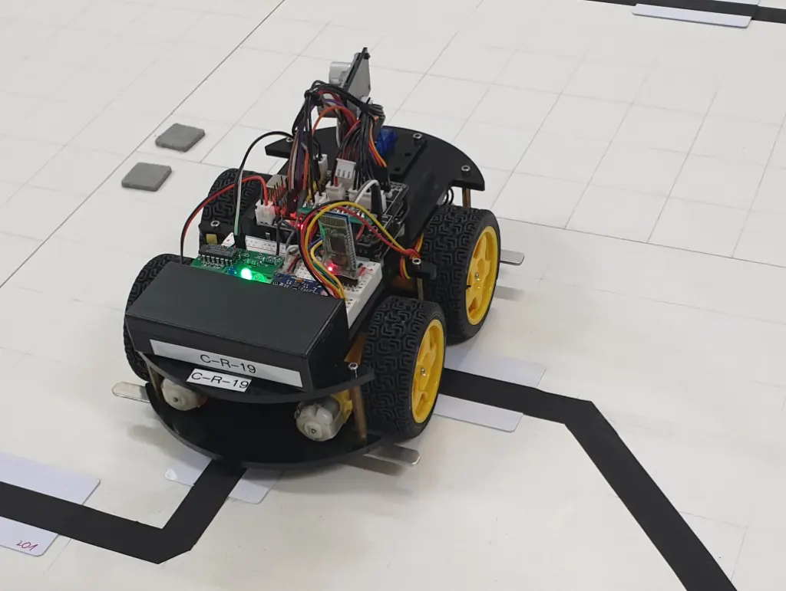
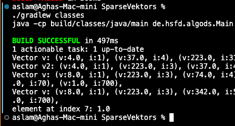
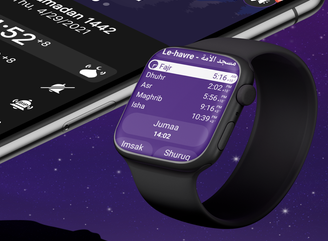
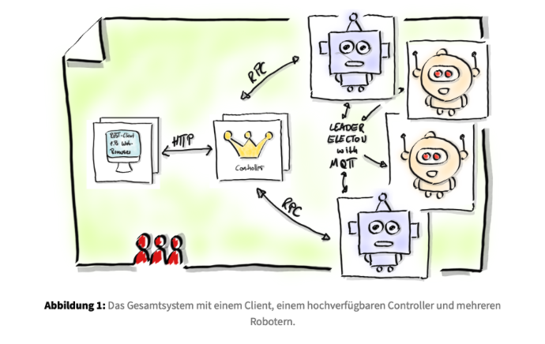

Recent Works
Smart Home Ventilation System

A modular Smart Home Ventilation System developed as an IoT semester project. ESP32-based indoor and outdoor nodes collect environmental data and control actuators, while MQTT provides communication through a central hub. An Express/EJS web application provides a user interface for monitoring sensor information and controlling connected devices.
Smart Home Ventilation System
IoT-based smart ventilation system integrating ESP32 sensor and actuator nodes, MQTT communication, and a web-based monitoring and control interface.
To The Project OverviewHusarion Frontier Explorer
Autonomous ROS 2 robot exploration system using SLAM, Nav2 and frontier detection to map previously unknown environments.
To The Project OverviewBinary Tree App
Java implementation of Binary Search Trees, AVL Trees and Red-Black Trees with a shared modular architecture and iterative algorithms.
To The General Project OverviewTo the Visualisation Project OverviewUNO App
JavaFX implementation of the UNO card game combining object-oriented modelling, game logic, graphical interfaces and automated testing.
To The Project OverviewTerm Paper: Railway Communication Security
Academic cybersecurity study comparing the protection of safety-critical railway communication systems in Europe and Japan.
To The Project OverviewSimple Message Broker
UDP-based publish/subscribe message broker written in C with hierarchical topics, wildcard subscriptions and multiple publisher modes.
To The Project OverviewRakaat Counter
Arduino-based embedded system that detects sujud movements using ultrasonic or infrared sensors and automatically counts completed rakaat.
To The Project OverviewMoodle ILL Spring 2026
Deployment and configuration of a Moodle-based railway learning platform developed for the E³UDRES² I Living Lab Spring 2026.
To The Project OverviewMiniShell
Unix-like command shell written in C using processes, pipes, signals and low-level POSIX system functionality.
To The Project Overview
CloudGate Game
Quisque adipiscing fermentum pretium bibendum sagittis eros sit diam, libero
To The Project Overview
EDAG CityBot Project
Quisque adipiscing fermentum pretium bibendum sagittis eros sit diam, libero
To FPS_Reducer OverviewTo cb_decompressor OverviewAbacus App
Java projects for practising arithmetic. The swing offers a simple app and terminal versions, while javaFX adds more operations, player profiles, and saved progress.
To The Swing Project OverviewTo The JavaFX Project Overview
Online Store Android App
Quisque adipiscing fermentum pretium bibendum sagittis eros sit diam, libero
To The Project Overview
Line Follower in C
Quisque adipiscing fermentum pretium bibendum sagittis eros sit diam, libero
To The Project Overview
Sparse Vector
Quisque adipiscing fermentum pretium bibendum sagittis eros sit diam, libero
To The Project Overview
Mawaqit for Android Watch
Quisque adipiscing fermentum pretium bibendum sagittis eros sit diam, libero
To The Project Overview
Virtual Simulation: Robot-Football
Quisque adipiscing fermentum pretium bibendum sagittis eros sit diam, libero
To The Project Overviewmy areas of focus
Software development and visualisation
Interactive applications that make complex concepts easier to explore and understand.
Embedded Systems & Digital Hardware
Projects using microcontrollers, sensors, VHDL and FPGA technology to connect software with physical systems.
IT Security & Communication Networks
Research into secure communication in critical systems